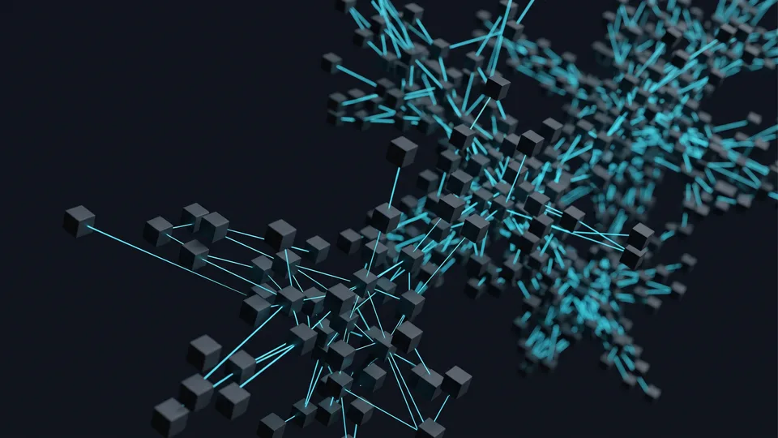

Ready-Made Package, SaaS Platform, Bespoke: What Does Each One Mean?
E-commerce software is the system that manages the product catalogue, the basket, payment and the order flow from a single panel. It comes to you in three forms: a ready-made package you install on your own server, a SaaS platform running on a monthly subscription, and bespoke development we write from scratch. All three do the same job; they distribute the responsibility differently. The real difference emerges in ownership.
All three will open a shop; the parting of ways comes down to two questions: who does the updating, and where does the bill grow? Decide who is to hold control, and the online shop platform options narrow of their own accord.
The market isn't waiting: according to the Ministry of Trade's ETBİS 2025 report — ETBİS is Türkiye's central e-commerce information system — 634,611 businesses in Türkiye are trading online; volume has passed ₺4.5 trillion, and by official figures its share of GDP is 6.9%. In that crowd, the choice of software in e-commerce is a decision that is expensive to reverse: changing platform means migrating all your data all over again.
- Ready-made package: You set the update schedule.
- SaaS platform: Version upgrades happen without anyone asking you.
- Bespoke development: Every request outside the scope is a new work order.
What decides the route isn't the size of the brand
It is the shape of the catalogue that drives the decision. A boutique with a single product group goes live quickly on a subscription system; a textile business with hundreds of variants is comfortable on a self-hosted platform. A manufacturer that needs dealer pricing and trade accounts drifts towards the bespoke side. In other words, the e-commerce software decision is taken by the shape of the catalogue, not by turnover.
Five Concrete Criteria for Choosing E-Commerce Software
Five criteria will clarify the choice: number of products, depth of variants, integration list, team capacity and data ownership. Once you answer those honestly, you'll eliminate two of the three options yourself. The right e-commerce software emerges where those five answers intersect. Do the scoring on paper, not on instinct.
The order matters: catalogue complexity at the top, budget at the bottom. On the wrong platform a cheap start ends up expensive; if a piece of e-commerce software doesn't suit you, every new feature means more development.
- Number of products: Fifty products and fifty thousand products will not carry the same platform.
- Depth of variants: Size, colour, fabric, pack quantity. As the combinations grow, the panel slows down.
- Integration list: Accounting, delivery, marketplace, payment infrastructure. Write them all on one page.
- Team capacity: Who is going to do the updating? If your answer is "nobody", a subscription system makes sense.
- Data ownership: Can you export the customer and order data whenever you choose?
How to score the criteria
Score each criterion from one to five, then add them up. The thresholds we use in our own quoting work are these:
| Total score | The route we recommend | Why |
|---|---|---|
| 5 – 11 | SaaS platform | The need is light; the maintenance burden isn't worth carrying |
| 12 – 18 | Ready-made package | The catalogue is growing and flexibility is needed |
| 19 – 25 | Bespoke development | The business rules go beyond standard shop logic |
Leave the budget until last
Businesses that put the budget first pay a second time six months later. Settle the requirement first, then talk about the figure. In e-commerce, the software budget is set by the scope; the scope is not set by the budget. We explain how we work the scope out on our web and software module page of the site.
Where Does the Money Go? Which Item Does It Pile Up In?
Spending piles up in three items: setup, monthly running costs and changes. On a subscription system the setup stays low and the monthly outgoing moves along at a fixed level. On a self-hosted platform the payment is spread across hosting and developer hours. The bill for a piece of e-commerce software is the sum of those three items. Ask about all three separately; only then will you see the total.
The budget flows in one of two directions: into rent, or into property. On a subscription system what you pay covers the rent; stop the subscription and the shop stops with it. On a self-hosted platform the payment goes into code and design, and the files stay with you.
Factor the commission in as well: some providers take a share of turnover, and as turnover grows that item can overtake the fixed cost. You see the real cost of a piece of e-commerce software in the third year, not in the first month.
The items nobody brings up in the first meeting:
- Theme and plugin licences
- Virtual POS integration, setting up the payment infrastructure
- Annual security and update maintenance
- Data migration and the URL redirect work
Fixed cost or variable cost?
A business with tight cash flow likes a fixed cost, and that is exactly what a subscription system gives. A growing brand prefers a variable cost, spending the money as the need arises.
After How Many Products and Variants Does a Platform Struggle?
The critical threshold isn't the number of products, it's the number of variant combinations. If you work with a few hundred products and simple variants, a subscription system will carry it comfortably. Once thousands of combinations come into play, a self-hosted platform or bespoke development is required. The e-commerce software you choose has to carry that load in the admin panel as well, not just in the shop window.
Say you sell T-shirts: six sizes, eight colours, 48 combinations per style. At a hundred styles you are managing 4,800 rows in the panel.
With a simple catalogue the opposite holds. A producer selling thirty kinds of jam shouldn't be paying for an advanced variant engine. Paying every month for a piece of e-commerce software you don't use is waste.
The ability to work in bulk is decisive
If you are updating the price list by hand, the platform is wearing you out; look for bulk import and rule-based pricing. The real test: how many minutes does it take you to push a price rise through? That is where you get the measure of a piece of e-commerce software.
Marketplace selling changes the equation
If you sell from the same stock onto marketplaces, synchronization is essential; a platform that doesn't hold a single stock pool will drag you into double-selling. Ask for that connection from day one.
Ownership and Portability: Whose Hands Is the Data In?
Ownership is a question of whose hands the code and the data are in. On a self-hosted platform the files sit on your own server; you can move them any day you choose. On a subscription system the shop lives on the provider's infrastructure. With bespoke development, both the code and the data belong to you. When you are choosing e-commerce software, ask that question on the first day.
Ask this in the sales meeting: if I wanted to leave tomorrow, what would I take with me? If the answer is vague, there is a lock-in risk. You ought to be able to download the product, customer and price data in a standard file; with a piece of e-commerce software, that shouldn't be a matter for negotiation.
Ownership isn't one single thing; the real distinction starts with the code. With open source you are using the licence of the core. With bespoke, the key to the repository stays with you; even if you change developer, the project stays with you.
“The number of businesses trading online, 600,800 in 2024, rose to 634,611 in 2025.”
— Ministry of Trade, The Outlook for E-Commerce in Türkiye 2025
Signs of lock-in
- You can only see the data in the provider's panel.
- The export file comes down with fields missing.
- You open a support ticket for a small design change.
- The contract is annual and the exit clause is unclear.
Which Way Does Your Integration Need Push You?
Your list of connections hardens the decision. Delivery, payment infrastructure and accounting connections come ready in all three options. Once ERP, dealer price lists and warehouse management enter the picture, off-the-shelf solutions start to struggle. If you have a list like that, put bespoke development on the table; patching it on afterwards costs a great deal more.
Split the list in two: the standard ones and the ones particular to you. A plugin solves the standard connections; that's a day's work. The bespoke connections carry your business rules — showing a dealer a different price, or reserving stock. If your list is long, choose the software you will use in e-commerce accordingly.
Dealer panels, ERP mapping and bespoke workflows are all covered on our custom software page in detail. How the setup, payment and delivery integrations proceed you will find on our e-commerce service page as well. For the category and product page work that comes after launch, take a look at our e-commerce SEO page.
Virtual POS and payment infrastructure
The type of software doesn't change virtual POS support in e-commerce. The difference is this: how many banks you can connect at once, and whether adding a new bank is a setting or a piece of development. On a subscription system the provider sets the limit; with bespoke, you do.

Ready-Made Package, SaaS Platform and Custom Software Compared
| Criterion | Ready-Made Package (self-hosted) | SaaS Platform (subscription) | Custom Software (bespoke) |
|---|---|---|---|
| Speed to launch | Medium | Fastest | Slowest |
| Opening cost | Medium | Low | High |
| Fixed monthly cost | Hosting + maintenance | Subscription, sometimes a share of turnover | Server + maintenance |
| Code access and ownership | The code runs on your side; the core is open-source licensed, the customizations are yours | With the provider | Entirely yours |
| Data portability | High | Limited to what you can export | Full control |
| Product and variant capacity | High (needs optimization) | Medium | We design it to the requirement |
| Bespoke business rules (dealer pricing, ERP) | Plugin + development | Limited | Unlimited |
| Need for a technical team | Yes; maintenance is essential | Almost none | Yes; an ongoing partner |
| Who it suits | An SME with a growing catalogue | A narrow product range, a fast start | B2B, a dealer network, a manufacturer running an ERP |
The decision comes down to three words: catalogue, integration, ownership. Write your answers under those headings and the right e-commerce software shows itself. If you don't know where to begin, start with our quote wizard — in a few questions we work out your product count and your integration list, then put forward the e-commerce software option that suits you, with the reasoning behind it.